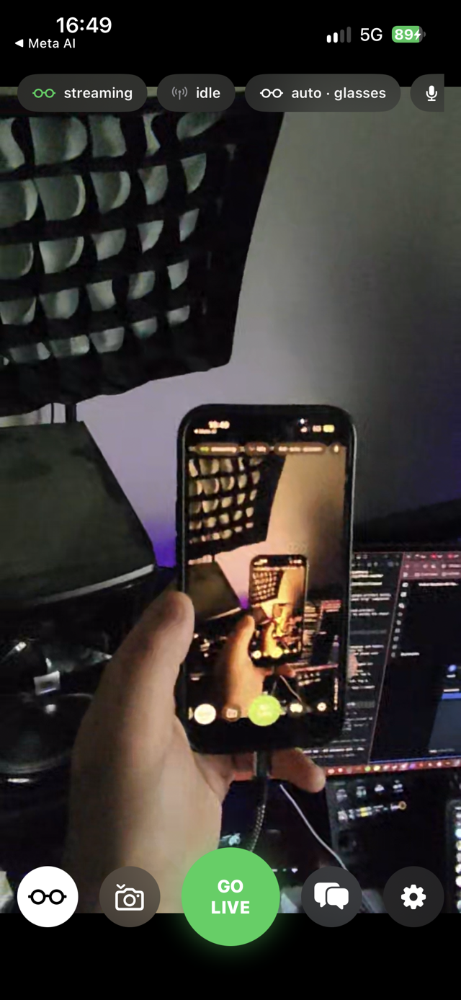
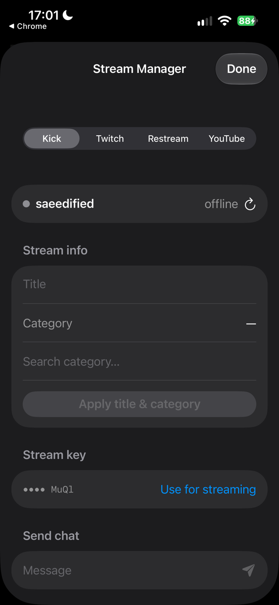
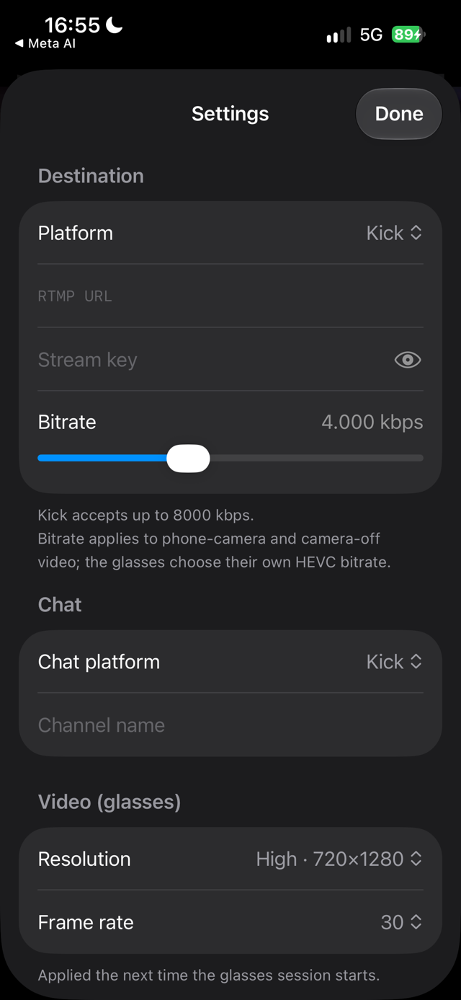

Ray-Ban Meta glasses to Kick, Twitch, YouTube, Restream — with chat, a stream manager and a camera that never goes black.

Check chat. Answer a text. Open Maps. The glasses never notice.
Video comes off the glasses as compressed HEVC and goes straight to your RTMP server without touching an encoder. The phone stays cool, the battery lasts, and the stream survives every app switch — the one thing every other glasses app gets wrong.
Kick, Twitch, YouTube or Restream chat slides up over your own feed.


Log in once. Then title, category, viewers, chat and stream key are one tap away.
Connect Kick, Twitch, Restream and YouTube inside the app. Edit the title and category, watch the viewer count, send a chat message, and pull your stream key automatically — no copying keys between apps, no OBS, no server in the middle. Restream even re-encodes for platforms that refuse HEVC.
Glasses drop, phone camera takes over in two seconds. Same codec, no restart.
Take the glasses off, fold them, walk out of range — the back or front camera fills in until they reconnect, then hands back. Switch sources on purpose with one tap. Mute the mic or black out the camera without stopping the stream.
Every choice made for IRL, on cellular, for hours.
The Meta SDK's ceiling for any third-party app. Portrait, straight from the glasses.
HEVC passthrough over Enhanced RTMP. Nothing decoded, nothing encoded, nothing warm.
Back or front camera, encoded as HEVC at the same size so the stream never changes format.
Kick, Twitch, Restream, YouTube. Tokens stay on the phone. No backend anywhere.
Presets for the big four plus Instagram, TikTok and your own relay into OBS.
Compiled on GitHub's runners, signed in CI, installed over USB from Windows.
Open source. Your glasses, your accounts, your copy.